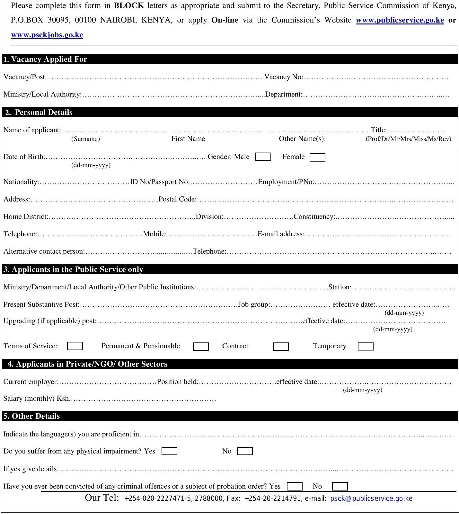

Please complete this form in BLOCK letters as appropriate and submit to the Secretary, Public Service Commission of Kenya, P.O.BOX 30095, 00100 NAIROBI, KENYA, or apply On-line via the Commission's Website www.publicservice.go.ke or www.psckjobs.go.ke
